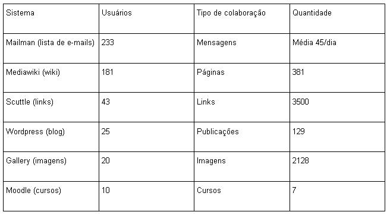

Mutirão Ecologia MetaReciclagem
Ecologia MetaReciclagem: uma proposta de um framework de sistemas para comunidades de prática
Dalton L. Martins, Tanya Stergiou e Munir Younes
Resumo
O artigo apresenta a ecologia de sistemas de informação de uma comunidade de prática de usuários baseada na Internet. Através da relação entre a comunidade de prática e seus sistemas, o artigo apresenta uma metodologia para replicação de comunidades com o suporte de sistemas de informação em suas várias etapas de desenvolvimento. É feito um estudo de caso da comunidade MetaReciclagem e a forma como seus grupos de usuários se apropriam da ecologia de sistemas em seu cotidiano.
Introdução
Comunidades, utilizando os recursos das tecnologias da informação, têm-se constituído em um foco importante de pesquisas tanto nos aspectos sociais do trabalho em grupo quanto nos aspectos tecnológicos de suporte a esse trabalho. Usuários na Internet, através de sistemas de informação, têm-se agrupado em comunidades virtuais como "uma estratégia de integração que auxilia os membros a gerenciar a sobrecarga de informação, receber retorno a respeito de novas idéias e manter-se lado a lado com idéias de ponta, técnicas e ferramentas" (Wenger et ali., 2002).
Wellman (2001) nos oferece uma definição operacional que auxilia a compreender a importância da comunidade como estrutura social de referência para a Internet: "Comunidades são redes de laços interpessoais que proporcionam sociabilidade, apoio, informação, um senso de integração e identidade social ."
Tornam-se, dessa forma, domínios de apoio e de referência que ultrapassam, muitas vezes, os limites geográficos de outras formas de instituições sociais e "de fato, numa economia de rápidas movimentações baseada no conhecimento, esses domínios são frequentemente mais estáveis e duradouros do que projetos específicos, postos de trabalho, produtos ou mesmo ramos de negócios" (Wenger et ali., 2002).
São esses domínios, as comunidades, que passam portanto a estruturar e orientar os fluxos de informação oriundos da colaboração entre os seus membros, através de mecanismos de interação projetados a partir de sistemas de informação com suporte a Web. Considerando esses sistemas de informação como verdadeiros dispositivos técnicos de apoio a formação e desenvolvimento da comunidade, podemos constatar que uma verdadeira ecologia cognitiva, relacionada às dimensões técnicas e coletivas da cognição, começa a se desenhar dado que "os dispositivos técnicos são portanto realmente atores por completo em uma coletividade que já não podemos dizer puramente humana, mas cuja fronteira está em permanente redefinição" (Levy, 1993). Portanto, ao caracterizarmos as comunidades não podemos deixar de lado a forma como a mesma constitui a sua ecologia cognitiva e como essa ecologia atua em relação a estruturação e orientação dos fluxos de informação.
Um ponto de fundamental importância em se tratando de ecologias cognitivas constituídas por comunidades baseadas na Web e seus dispositivos técnicos é o seu ciclo de realimentação, caracterizado pela forma como a comunidade se apropria da tecnologia e interfere na mesma para ajustá-la, adaptá-la conforme a evolução de suas necessidades e dos domínios da comunidade. Em termos das tecnologias da informação, temos que "a difusão da tecnologia amplifica seu poder de forma infinita, à medida que os usuários apropriam-se dela e a redefinem. As novas tecnologias da informação não são simplesmente ferramentas a serem aplicadas, mas processos a serem desenvolvidos. Usuários e criadores podem tornar-se a mesma coisa" (Castells, 1999). As tecnologias da informação, sendo tecnologias essencialmente de manipulação simbólica, facilitam o seu próprio processo de reconfiguração em torno de "comunidades de inovação tecnológicas que podem aumentar a velocidade e a eficiência na qual usuários e empresas podem desenvolver, testar e difundir suas inovações" (Von Hippel 2005).
O objetivo deste artigo é caracterizar uma comunidade baseada na Web, a comunidade MetaReciclagem, com a intenção de oferecer uma proposta de um framework para ecologias cognitivas através dos sistemas de informação e suas características a partir dos processos desenvolvidos pela interação entre os membros da comunidade.
Comunidade MetaReciclagem
Criada em dezembro de 2002, como uma comunidade independente e distribuída geograficamente através de seus membros, a MetaReciclagem origina-se a partir de uma lista de emails na Web com o objetivo de ser uma comunidade interdisciplinar tendo “como foco o desenvolvimento de tecnologias para redes sociais, criando alternativas para interconectar e integrar comunidades geograficamente dispersas” (Dimantas, 2006). Dessa forma, podemos caracterizar MetaReciclagem como uma verdadeira comunidade de prática em seus três níveis estruturais: o domínio, a comunidade e a prática (Wenger, 2002).
O domínio da comunidade é aquilo que define a identidade da comunidade, seus pontos de interesse, seus focos de conversação. A comunidade MetaReciclagem volta-se para uma ampla interdisciplinaridade em torno do tema redes sociais, abordando desde questões técnicas relativas a reciclagem de computadores e software livre, até questões de fundo filosófico relacionando práticas pedagógicas em projetos sociais e a livre circulação da informação.
A comunidade é formada pelas relações e interações entre seus membros, sendo a estrutura social que permite o aprendizado. A comunidade MetaReciclagem é formada por aproximadamente (o fluxo de usuários que entram e saem da comunidade é considerável) 230 pessoas espalhadas em diversas cidades do Brasil e até mesmo do exterior, contando atualmente com alguns membros de Portugal. Os membros da comunidade são a maioria do sexo masculino (81,8%) e possuem idade majoritária entre 25-34 anos (72%), sendo que em torno de 54% dos membros reside na região de São Paulo (Caetano, 2006). Os membros da comunidade possuem ampla formação acadêmica e área de atuação, indo desde artistas plásticos, jornalistas, advogados a engenheiros, cientistas da computação, técnologos e matemáticos.
A prática é o conjunto de metodologias, idéias, ferramentas, informação, estilo, linguagem, histórias e documentos que os membros das comunidade compartilham (Wenger, 2002). A prática é aquilo que a comunidade gera, troca, compartilha em torno de seu domínio de interesse, sendo registrado e compartilhado através de diversas formas possíveis, desde encontros presenciais até sistemas de informação baseados na Web. A prática da comunidade MetaReciclagem está essencialmente focada em torno de três níveis - infra-estrutura lógica, infra-estrutura física e interação e integração de capital humano (Dimantas, 2006), chamados de a Tríade da Informação Livre, que são os três níveis necessários para a criação de redes sociais como estratégia de integração de comunidades. A infra estrutura física tem relação com os computadores, redes de dados, cabos e materiais físicos necessários. A infra-estrutura lógica tem relação com os sistemas de informação utilizados, integradores e agregadores de informações. A interação e integração do capital humano tem relação com o processo da troca da informação entre os membros da comunidade. A comunidade MetaReciclagem atua, portanto, como uma comunidade de prática que tem por objetivo desenvolver tecnologias para redes sociais e o desenvolvimento das próprias redes sociais, atuando nos três níveis da tríade da informação, formando, dessa forma, uma estrutura social baseada na Web para o desenvolvimento de projetos, trocas de experiências, análises de técnicas e ferramentas, relatos de práticas sociais e tecnológicas em torno do domínio das redes sociais. Podemos entender MetaReciclagem como sendo uma comunidade de prática focada no desenvolvimento de outras comunidades de prática usando, dessa forma, a si mesma como um laboratório de experimentação de tecnologias para redes sociais, metodologias de avaliação e replicação dos seus conceitos em projetos técnicos e sociais.
Através de parcerias com diversas instâncias do terceiro setor e do poder público, a comunidade MetaReciclagem vem desenvolvendo projetos dentro do domínio das redes sociais, atuando em áreas como a inclusão digital, cultura digital, desenvolvimento de software livre e reciclagem de computadores, formando o corpo de prática da comunidade, através de suas experiências. As parcerias e os projetos estabelecidos pela comunidade são geograficamente distribuídos em cidades como Santo André, Campinas, São Paulo, Manaus, Belo Horizonte, Rio de Janeiro, Teresina, Arraial d'Ajuda e Porto Alegre. São os membros da comunidade através de suas articulações locais que constrõem suas relações de parceria com Organizações Não- Governamentais locais e instâncias do poder público municipal e estadual. Foi através dessa dinâmica e capilaridade nacional de atuação da comunidade em práticas relacionadas a redes sociais que levou o Ministério da Cultura a identificar "o processo de MetaReciclagem como sendo um dos eixos temáticos da ação cultura digital" (Ministério da Cultura, 2004) em seu projeto Pontos de Cultura, que "será o meio de ligação entre as ações do poder público e as ações da própria comunidade; e o meio de ligação entre as ações culturais das diversas comunidades articuladas" (Gil, 2004).
Dessa forma, a comunidade é estruturada através de suas ações locais de pesquisa, desenvolvimento, inovações, aplicações e através dos sistemas de informação Web, que permitem a articulação, registro, avaliação, compartilhamento e colaboração entre as diversas instâncias locais da comunidade e suas iniciativas. Somente através da ecologia formada por esses sistemas torna-se possível o desenvolvimento de ações descentralizadas e o suporte e acompanhamento da comunidade dessas mesmas ações, sendo que a ecologia é alimentada por ações pontuais locais e torna-se o ponto de referência e validação dessas ações, como ponto de estabilidade e estrutura de organização social.
Ecologia MetaReciclagem
O termo ecologia deriva de dois vocabulários gregos: oikos (casa) e logos (estudo). Logo, podemos dizer que ecologia está relacionada ao estudo do ambiente, ou seja, dos processos que definem o ambiente, delimitam suas fronteiras e permitem a relação entre seus elementos constitutivos. Em termos de comunidades baseadas em sistemas de informação Web "os processos que sustentam a rede social são processos de comunicação, que geram um corpo comum de significados e regras de comportamentos (a cultura da rede) e um corpo comum de conhecimentos" (Capra, 2002).
Esses processos de comunicação ocorrem das mais variadas formas possíveis, seja em encontros presenciais entre os membros da comunidade, seja através de suas interações pelos sistemas de informação de articulação da comunidade. Através dos registros gerados pelo uso comum desses sistemas, a comunidade vai tecendo a cultura da rede, estabelecendo suas relações e bases conceituais a partir das quais orienta seu trabalho e a produção de significados. Dessa forma, é o fluxo de comunicações, através de seu registro, que define e redefine continuamente a ecologia de sistemas de suporte a comunidade, pois "cada comunicação gera pensamentos e um significado, os quais dão origem a novas comunicações" (Capra, 2002).
Criar, portanto, uma ecologia de sistemas de informação com base no suporte à colaboração da comunidade tem se mostrado uma tarefa de contínua adaptação conforme o processo evolutivo da própria comunidade.
Antes de iniciar uma análise da ecologia MetaReciclagem como um todo, vale aqui registrar o processo histórico de formação dessa ecologia conforme a própria evolução da comunidade. O início da comunidade se deu através de sua lista de emails, sendo uma das mais clássicas e utilizadas ferramenta de comunicação da sociedade de informação (Tyler et al., 2005). Utilizamos o sistema de gerenciamento de emails Mailman (http://www.gnu.org/software/mailman/index.html). A lista de email rapidamente se tornou insuficiente como forma de registro e de trabalho de idéias de projetos, protótipos, experimentações, devido principalmente a dificuldade no processo de recuperação da informação.
Dessa forma, surge dentro da comunidade o sistema Media Wiki, o mesmo sistema utilizado na construção da Wiki Pedia é basicamente um sistema de edicação coletiva de páginas web, que permite que os usuários do sistema possam criar páginas relatando idéias, projetos, coletando informações e registrando experiências. O sistema também que vários usuários possam editar a mesma página, dando possibilidade de colaboração na construção coletiva de idéias.
Resolvido o problema do registro e recuperação de idéias e projetos, surgiu dentro da comunidade a questão de coletarmos e organizarmos de forma flexível e evolutiva os links que os membros da comunidade desejam compartilhar com a rede. Após vários testes, chegou-se ao sistema Scuttle (http://scuttle.org/), sistema que permite aos membros da comunidade cadastrarem seus links e classificá-los por taxonomias. O sistema agrupa todos os links que foram classificados nas mesmas taxonomias do usuário e de todos os outros membros, facilitando a busca temática na base de links e construindo um repositório de informações consistente com os seus objetivos, ou seja, com seu domínio.
Após a implementação desses sistemas, surgiram três novos problemas derivados do próprio processo evolutivo da prática da comunidade. Após uma intensa fase de criação de projetos, alguns iniciaram seu processo de implementação, gerando como consequência um conhecimento prático de determinadas soluções tecnológicas e experiências sociais no âmbito do domínio da comunidade. Essas experiências precisam ser relatadas no cotidiano dos trabalhos e os sistemas de informação até então existentes mostravamse insuficientes como possibilidade de registro e mapeamento dos trabalhos. Sentia-se falta de suporte a imagens, de um ambiente que permitisse a construção de um diário de experiências e de um ambiente que permitisse a comunidade criar cursos à distância para seus membros a respeito de suas pesquisas e experiências. Surgiram dessa forma, o sistema de suporte à educação à distância Moodle (www.moodle.org), o sistema de gerenciamento de imagens Gallery (http://gallery.menalto.com/) e o sistema de Blog Coletivo Word Press WordPress (http://wordpress.org/).
Por fim, foi criada na comunidade um sistema de agregador RSS (Really Simple Sindication) que agrega todas as informações que circulam em todos os ambientes que constituem a ecologia de sistemas, permitindo ter uma visão geral de tudo o que ocorre dentro da comunidade. Esse sistema tem por objetivo apenas facilitar observar a partir de um único todas as alterações na ecologia da comunidade.

Segundo Wenger (2002), há 3 principais níveis de participação dos membros de uma comunidade. Há o grupo nuclear, que é composto em média de 10 a 15% da comunidade, que participa dos projetos da comunidade, identifica tópicos de interesse para o grupo e vai criando uma agenda de reflexões, através de suas mensagens, experiências, imagens e links. O próximo nível é o grupo de membros ativos, em média 15 a 20% da comunidade, que participam dos eventos da comunidade, ocasionalmente participam das discussões sem a mesma regularidade e intensidade do grupo nuclear. A maior parte da comunidade é composta pelo grupo periférico que são os usuários que raramente participam.
Observando os dados da tabela 1, podemos analisar como esses números revelam, através do uso da ecologia de sistemas, esses três níveis de usuários. Primeiramente, a maioria absoluta dos membros participa da lista de emails, que é um sistema que não exige muito envolvimento por parte do usuário, já que não há necessidade da leitura da mensagem e tão pouco de participar da discussão. Há uma configuração específica do sistema Mail Main que permite aos membros da lista receber as mensagens uma-a-uma (188 membros) ou um único email contendo o resumo das mensagens (45 membros). É curioso notar que o número dos membros que recebem as mensagens individualmente é muito próximo com o número de membros registrados no sistema Wiki (181). Uma análise dos dados de participação de membros no mês de junho de 2006, mostrou que houve 96 membros que participaram de discussões da lista. Observando que tivemos um número de 31 membros que publicaram menos que 3 mensagens durante o mês, sendo os 65 (27,9%) membros restantes indicando um número dentro da faixa de usuários ativos e participantes do grupo nuclear.
Já analisando a participação dos membros da comunidade nos outros sistemas de informação, podemos perceber uma queda grande de participação: Scuttle (18,5%), Word Press(10,7%), Gallery (8,6%) e Moodle (4,3%). Essa redução pode ser avaliada pelo fato de que esses sistemas indicam um maior necessidade de envolvimento por parte dos membros da comunidade na execução de projetos, na proposição de novas idéias, na pesquisa de temas de estudo e na montagem de cursos, mostrando que esses sistemas acabam se tornando o meio de trabalho e articulação do grupo nuclear da comunidade. Outro elemento importante a ser analisado é o fato de que esses sistemas possuem um maior grau de complexidade, dado que o usuário filtra e estrutura os fluxos de informação de forma lógica e organizada segundo seus próprios critérios, envolvendo processamento de recursos audio-visuais e categorização da informação. É, portanto, através desses sistemas que o grupo nuclear articula suas ações e vai pautando o restante da comunidade, formada pelo grupo de usuários ativos e periféricos.
Metodologia de replicação
Wenger (2002) descreve os cinco estágios de desenvolvimento de uma comunidade: potencial, união, maturação, articulação e transformação. O estágio potencial indica a fase em que percebemos o potencial de formação de uma comunidade em torno de um determinado domínio. A união consiste do processo de agregar pessoas em torno da proposta. A fase de maturação consiste na etapa de idenficar com maiores detalhes o domínio da comunidade, quais são seus interesses, suas especificidades e de atuação na formação da cultura de base e dos consensos da comunidade. A fase de articulação envolve o agrupamento dos membros em torna da execução dos projetos, implementação de idéias, construção de protótipos e obtenção de recursos. Após essa fase, a comunidade passa por uma etapa de transformação, redefinindo objetivos, práticas e buscando novas possibilidades.
Como forma de atender de estruturar esses cinco estágios de desenvolvimento, propomos um framework como metodologia de replicação do processo desenvolvido pela comunidade MetaReciclagem demonstrado na tabela 2.
Agradecimentos
Gostaríamos de agradecer aos membros da comunidade MetaReciclagem como um todo, em especial a Felipe Fonseca, Hernani Dimantas, Miguel Caetano, Marcelo Braz e Daniel Pádua pelo apoio na realização deste trabalho.
Conclusão
Este artigo teve por objetivo apresentar a experiência da comunidade MetaReciclagem na criação de uma ecologia de sistemas de informação Web para atender as necessidades em evolução com o passar do tempo de sua comunidade de prática. O conceito de comunidade de prática e sua relação com a ecologia de sistemas permitiu traçar um paralelo direto entre as fases de desenvolvimento de comunidades e o uso de sistemas de informação para dar suporte a esse mesmo desenvolvimento.
Dessa relação também pudemos observar, de forma geral, a participação de uso dos sistemas pelo grupo de usuários periféricos, ativos e nuclear, indicando uma possibilidade de tendência de uso de sistemas específicos não só para necessidades específicas, mas também para níveis diferentes de envolvimento e participação do trabalho da prática e das experiências da comunidade.
É , portanto, através dessa experiência que propomos uma metodologia de replicação e estrutura da ecologia de sistemas através das etapas de desenvolvimento de uma comunidade, baseada em alguns sistemas de informação baseados em software livre e que podem ser utilizados e adaptados por qualquer comunidade em formação ou em diferentes estágios de desenvolvimento.
REFERÊNCIAS
[1] Caetano, Miguel Afonso. "Tecnologias de resistência: transgressão e solidariedade nos media tácticos". Dissertação de Mestrado.2006. Insituto Superior de Ciências do Trabalho e da Empresa. Portugal.
[2] Capra, Fritojf. As conexões ocultas ciência para uma vida sustentável. Ed. Cultrix - Amana-key. 2002
[3] Castells, Manuel."A sociedade em rede". Editora Paz e Terra. 1999
[4] Dimantas, Hernani. "Linkania: a sociedade da colaboração". Dissertação de Mestrado. Pontifícia Universidade Católica. São Paulo. 2006.
[5] Gil, Gilberto. Discurso do Ministro sobre o Programa Nacional Cultura, Educação e Cidadania Cultura Viva, durante encontro com artistas em Berlim. 2004. Link:
http://www.cultura.gov.br/noticias/discursos/index.php?p=847&more=1&c=1&...
[6] Levy, Pierre. "As tecnologias da inteligência: o futuro do pensamento na era da informática". Editora 34. 1993.
[7] Ministério da Cultura. Catálogo do Programa Cultura Viva.2004 Link:
http://www.cultura.gov.br/sys/skins/cultura_viva_capa/img/cartilha_cultu...
[8] Tyler, Joshua R., Wilkinson, Dennis M., Huberman, Bernarndo A.,Email as spectroscopy: automated discovery of community structure within organizations. The Information Society 2005. Ed. Taylor & Francis Group. 2005.
[9] Von Hippel, Eric. "Democratizing innovation technologies". MIT Press. 2005.
[10] Wellman, Barry. "Physical place and cyberplace: the rise of networked individualism", International Journal of Urban and Regional Research, 1. 2001.
[11] Wenger, Etienne, Mc Dermott, Richard, Snyder, William M. "Cultivating Communities of Practice". Harvard Business School Press. 2002.
- 1888 leituras
Comentários recentes
1 ano 31 semanas atrás
2 anos 6 dias atrás
2 anos 2 semanas atrás
2 anos 16 semanas atrás
2 anos 16 semanas atrás
2 anos 18 semanas atrás
2 anos 19 semanas atrás
2 anos 19 semanas atrás
2 anos 19 semanas atrás
2 anos 19 semanas atrás